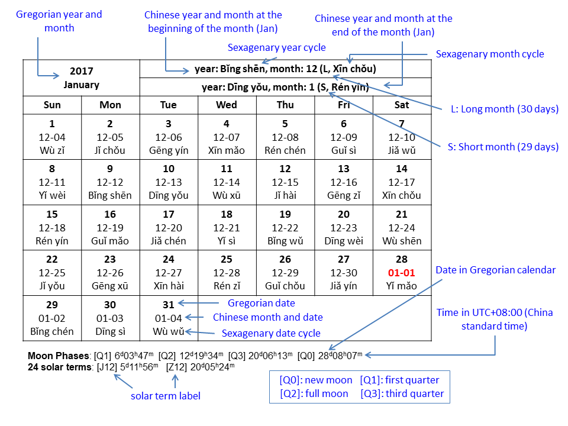

The information in the calendar table is explained in the diagram below. The example is taken from January, 2017.

The month and date in the Chinese calendar is denoted by MM-DD in the calendar table. For example, 12-29 means the 29th day in the 12th month of the Chinese calendar. A Chinese year usually has 12 months. Each month can have 30 days (long month) or 29 days (short months). To keep the calendar in sync with seasons, a leap (intercalary) month is added about every three years so that the year has 13 months. A leap month works in a similar way as a leap day in the Gregorian calendar, but an extra month is inserted in the year instead of an extra day. The leap month is indicated by the same number as the previous month, but a "leap" is added before the number. For example, there was a leap month after month 6 in the Chinese year in 2017. The month is denoted by "leap 6".
A Chinese year is labelled by its sexagenary year cycle. Sexagenary cycle is also used to label the month and date in the Chinese calendar. A brief introduction to the sexagenary cycle is given on this page.
For simplicity, the symbols Q0, Q1, Q2 and Q3 are used to represent "new moon", "first quarter", "full moon" and "third quarter". At the bottom of each month, the Gregorian dates of the four moon phases and 24 solar terms occurring in the month are listed. The times are given in the China standard time (meridians of 120° East). A brief introduction to the 24 solar terms is given on this page.
The Chinese calendar data on this website are computed using the method described here.